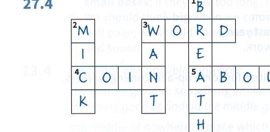

Unit 26
26.2
- h
- e
- f
- a
- g
- d
- c
- b
26.3
1 b)
2 c)
3 a)
4 a)
5 a)
26.4
- Có, vì cô ấy đang khen ngợi sự tiến bộ nhanh chóng của bạn.
- Không, vì người nói cảm thấy hành vi của bạn thực sự đáng lo ngại.
- Vội vã / Nhanh lên.
- Không, đó là tội phạm.
- Bạn có thể drag your feet khi mệt mỏi (theo nghĩa đen của cụm từ) nhưng, dưới dạng một thành ngữ, bạn drag your feet (chần chừ/trì hoãn) khi bạn miễn cưỡng làm một việc gì đó.
- Phim giật gân có xu hướng fast and furious (nhanh và dữ dội) trong khi truyện tình yêu có xu hướng diễn biến chậm hơn nhiều.
- Có, vì nó gợi ý rằng điều đó thành công ngay từ khi bắt đầu.
- Bạn có thể keep a diary (viết nhật ký).
- Rất bừa bộn.
- Rất phấn khích hoặc tức giận.
Unit 27
27.1
- a slip of the tongue (lỡ lời)
- taking the mick/mickey (trêu chọc/chế giễu)
- lost for words (cạn lời/không thốt nên lời)
- small talk (nói chuyện xã giao/tán gẫu)
- a pack of lies (hoàn toàn là dối trá)
27.2
- Tôi đã không biết phải nói gì. Tôi (hoàn toàn) lost for words (không thốt nên lời).
- Không một từ nào trong câu chuyện của anh ta là sự thật. Tất cả (hoàn toàn) là a pack of lies (một loạt lời dối trá).
- Tôi không cố ý nói ra điều đó; đó chỉ là a slip of the tongue (lỡ lời).
- Tôi không có ý xúc phạm cô ấy. Tôi chỉ đang taking the mick/mickey (trêu chọc).
- Đó không phải là một cuộc trò chuyện quá nghiêm túc, chỉ là small talk (tán gẫu/nói chuyện xã giao).
27.3
- Cô ấy đã gặp một vấn đề cá nhân lớn. Chúng ta không nên make light of (coi nhẹ) nó.
- Anh ấy kể với tôi rằng anh ấy đã học toán ở Harvard, nhưng điều đó (chỉ) không ring true (nghe có vẻ thật/đáng tin).
- Cô ấy nói cô ấy là một công chúa đã mất sạch tiền bạc và địa vị trong một cuộc cách mạng. Thật là a likely story (khó tin làm sao)!
- Cô ấy phải thức dậy lúc 5 giờ sáng và lái xe 50 dặm để đi làm mỗi ngày. Đó không phải là no joke / laughing matter (chuyện đùa/trò cười đâu).
- Tôi nói tôi nghĩ cô ấy nên tự tìm một người bạn trai. Đó là một off-the-cuff remark (lời nhận xét bột phát/chưa suy nghĩ kỹ).
27.4

Unit 28
28.1
- c
- d
- e
- a
- b